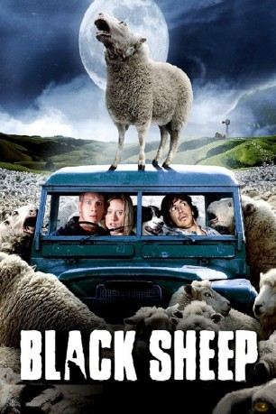

#7027 Black Sheep
 
 IMDB-Wertung: 5.8 / 10
IMDB-Wertung: 5.8 / 10  Tomatometer: 71
Tomatometer: 71  Metascore: 0
Metascore: 0 
Neuseeland: Rund vier Millionen Einwohner, aber fast 40 Millionen Schafe. Die friedlichen Tiere entdecken jedoch nach einem fehlgeschlagenen Gen-Experiment ihre dunkle Seite. Mit einer erschreckenden Blutrünstigkeit überfallen sie die Menschen eines kleinen Dorfes und zeigen, wie abgrundtief böse die Seele eines Schafs sein kann. Friedlich blökende Schafe mutieren zu blutrünstigen Wollknäul-Zombies. Auch der Biss dieser Bestien lässt Menschen zu Schafzombies mutieren. Schnell verbreitet sich die verheerende Seuche und der Mensch wird zur bedrohten Art. Auf einer Pressekonferenz wollte Angus eigentlich sein Superschaf präsentieren, doch eine wildgewordene Herde mutierter Killerschafe ...
Jahr: 2006
Dauer: 86 Minuten
FSK: 18
Land: Neuseeland Studio: Ascot Elite Home EntertainmentTonspuren: DTS - ,
Untertitel:
Auflösung: 1080p (1920x816) Größe: 7331 MB
Genre: Horror, Sci-Fi, Komödie
Regisseur: Jonathan King
Drehbuch: Jonathan King
Soundtrack:
Darsteller:
- Nathan Meister als Henry Oldfield
- Peter Feeney als Angus Oldfield
- Oliver Driver als Grant
- Tandi Wright als Doctor Rush
 Nick Blake als Taxi Driver
Nick Blake als Taxi Driver- James Ashcroft als Prebble
- Mick Rose als Mike
- Luke Hawker als Investor
- Jono Manks als Investor
- Danielle Mason als Experience
- Tammy Davis als Tucker
- Glenis Levestam als Mrs. Mac
- Matthew Chamberlain als Oliver Oldfield
- Nick Fenton als Young Henry
- Eli Kent als Young Angus
- Sam Clarke als Young Tucker
- Richard Chapman als Muldoon
- Louis Sutherland als Winston
- Ian Harcourt als Brash
- Kevin McTurk als Weresheep
- Lucy Briant als Investor
- Justin B. Carter als Investor
- Deana Elvins als Investor
- Lewis Rowe als Investor
- Peter Rutherford als Investor
- Matthew Saville als Investor
- Richard Whiteside als Investor
- Min Windle als Investor
Datei: X:\FSK18-2000-2009\Black Sheep (2006, FSK18, 1920x816).mkv seit 18.09.2017
Festplatte: FSK18
 Es gibt insgesamt 106 Filme in der Gruppe 'FSK18-2000-2009'
Es gibt insgesamt 106 Filme in der Gruppe 'FSK18-2000-2009'